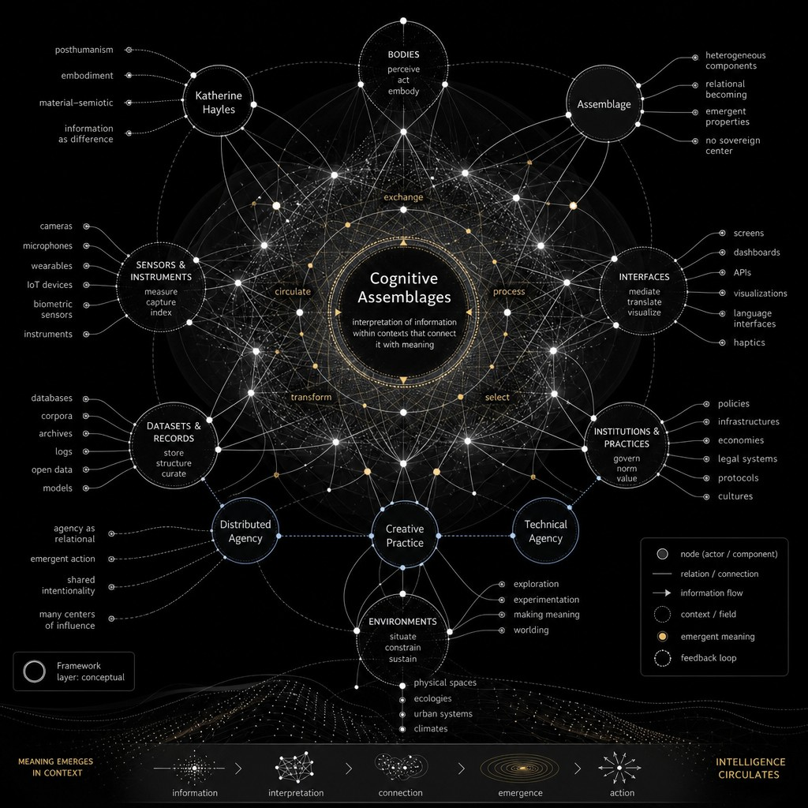
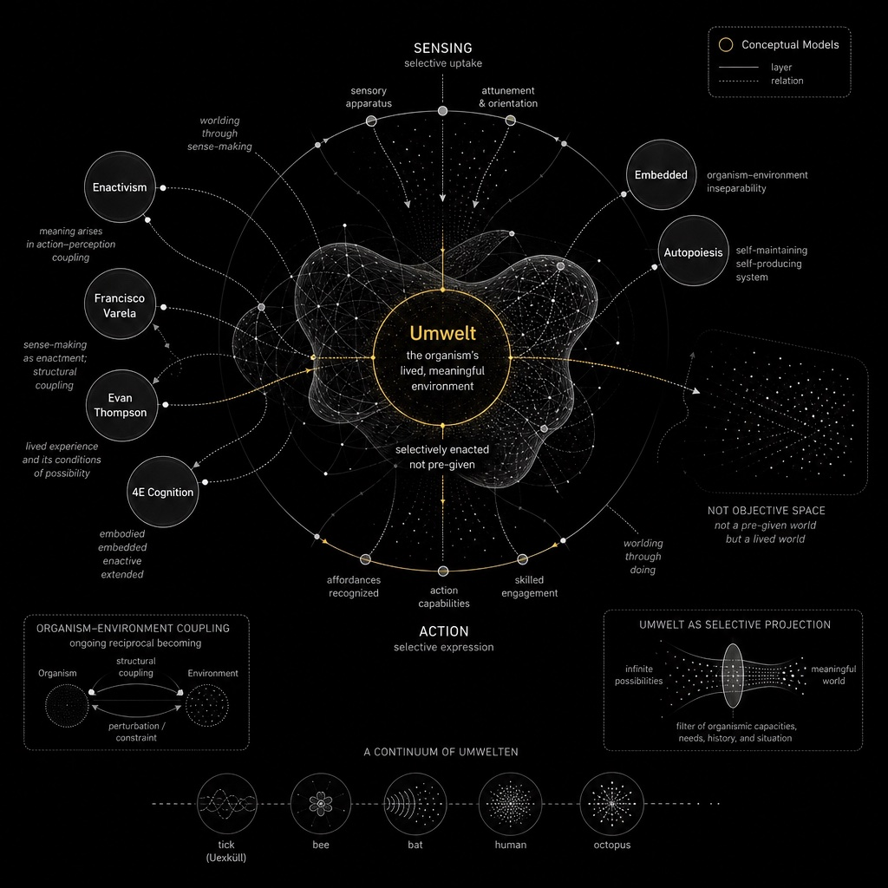
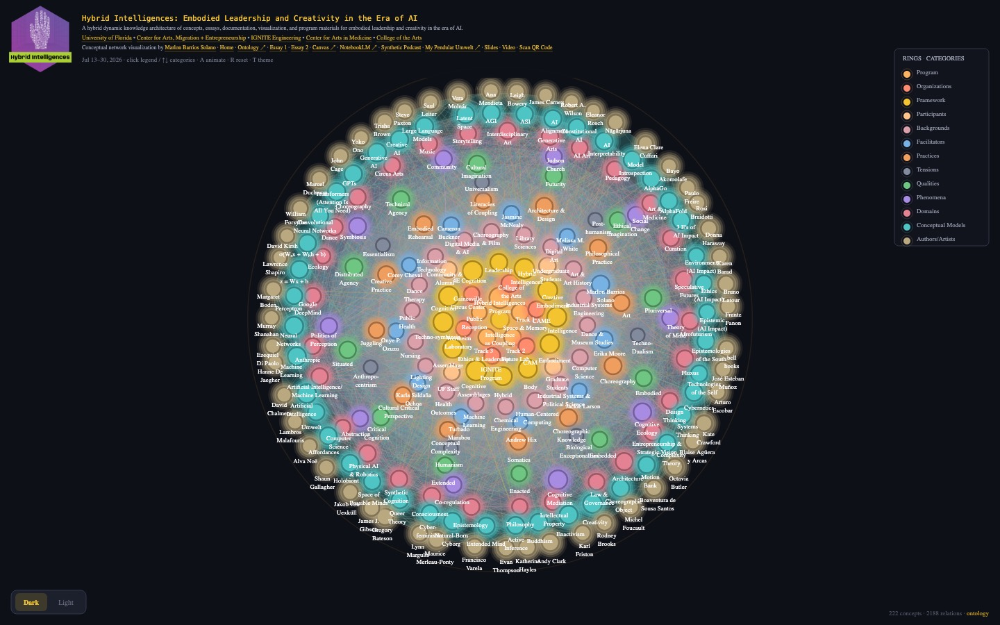

This page is a publishing hub for the research of Marlon Barrios Solano and for collaborations with guests. The writing is in essay form. Guest pieces feed the ontology and the network directly: they are not side notes. They are meant to expand an epistemological framework.
The aim is to take embodiment and cognition beyond the human, and at the same time beyond the organic — including synthetic entities — in the proposition of cognitive assemblages developed by N. Katherine Hayles.
The first essays here are by Marlon — including My Umwelt, written in conversation with GPT-5.5, and Essay 3 on the ontology, knowledge graph, and the Hub as a cognitive assemblage. Guest essays from the program will appear as the section grows.

Essay 1Hybrid Intelligences, Cognitive Assemblages, and Complex Embodiment in the Era of AI
Marlon Barrios Solano · July 10, 2026

Essay 2My Umwelt
Marlon Barrios Solano, in conversation with GPT-5.5 · July 20, 2026

Essay 3Hybrid Intelligences: Ontology, Knowledge Graph, and Cognitive Assemblage
Marlon Barrios Solano · September 2, 2026
This section will keep growing. New essays — from Marlon and from guests — will be added as they enter the Hybrid Intelligences knowledge architecture.